NCERT Solutions Class 9 Science Chapter 2 Is Matter Around Us Pure – Here are all the NCERT solutions for Class 9 Science Chapter 2. This solution contains questions, answers, images, step by step explanations of the complete Chapter 2 titled Is Matter Around Us Pure of Science taught in class 9. If you are a student of class 9 who is using NCERT Textbook to study Science, then you must come across Chapter 2 Is Matter Around Us Pure. After you have studied lesson, you must be looking for answers of its questions. Here you can get complete NCERT Solutions for Class 9 Science Chapter 2 Is Matter Around Us Pure in one place. For a better understanding of this chapter, you should also see Chapter 2 Is Matter Around Us Pure Class 9 notes , Science.
NCERT Solutions For Class 9 Science Chapter 2 Is Matter Around Us Pure
Topics and Sub Topics in Class 9 Science Chapter 2 Is Matter Around Us Pure:
- Is Matter Around Us Pure
- What is a Mixture?
- What is a Solution?
- Separating the Components of a Mixture
- Physical and Chemical Changes
- What are the Types of Pure Substances?
These solutions are part of NCERT Solutions for Class 9 Science. Here we have given Class 9 NCERT Science Text book Solutions for Chapter 2 Is Matter Around Us Pure.
IN-TEXT QUESTIONS SOLVED
NCERT Textbook for Class 9 Science – Page 15
Question 1. What is meant by a substance?
Answer: A pure substance consists of a single type of particles.
Question 2. List the points of differences between homogeneous and heterogeneous mixtures.
Answer:

More Resources for Class 9 Science
Class 9 Science NCERT Textbook Page 18
Question 1. Differentiate between homogeneous and heterogeneous mixtures with examples.
Answer:

Formulae Handbook for Class 9 Maths and ScienceEducational Loans in India
Question 2. How are sol, solution and suspension different from each other?
Answer:

Question 3. To make a saturated solution, 36 g of sodium chloride is dissolved in 100 g of water at 293 K. Find its concentration at this temperature.
Answer: Mass of solute (sodium chloride) = 36 g
Mass of solvent (water) = 100 g
Mass of solution = Mass of solute + Mass of solvent
= 36 g + 100 g = 136 g
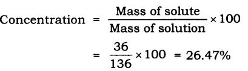
Class 9 Science NCERT Textbook Page 24
Question 1. How will you separate a mixture containing kerosene and petrol (difference in their boiling points is more than 25°C), which are miscible with each other?
Answer: A mixture of kerosene and petrol which are miscible with each other can be separated by distillation.
Method
- Take a mixture in a distillation flask.
- Fit it with a thermometer.
- Arrange the apparatus as shown in the figure.
- Heat the mixture slowly.
- Petrol vaporises first as it has lower boiling point. It condenses in the condenser and is collected from the condenser outlet.
- Kerosene is left behind in the distillation flask.
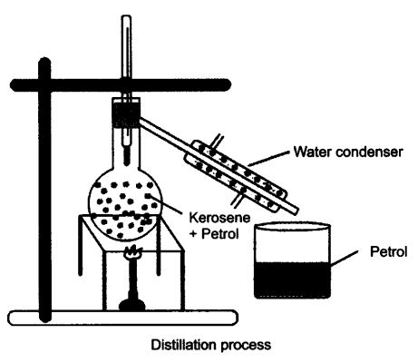
Question 2. Name the technique to separate
(i) butter from curd,
(ii) salt from sea-water,
(iii) camphor from salt.
Answer: (i) Centrifugation,
(ii) Evaporation,
(iii) Sublimation.
Question 3. What type of mixtures are separated by the technique of crystallisation?
Answer: Crystallisation technique is used to purify solid with some impurities in it. Example: Salt from sea-water.
NCERT Textbook Questions Page 24
Question 2. Classify the following as chemical or physical changes:
- cutting of trees,
- melting of butter in a pan,
- rusting of almirah,
- boiling of water to form steam,
- passing of electric current, through water and the water breaking down into hydrogen and oxygen gas,
- dissolving common salt in water,
- making a fruit salad with raw fruits and
- burning of paper and wood.
Answer:

Question 3. Try segregating the things around you as pure substances or mixtures
Answer: Pure substances—Water, bread, sugar and gold.
Mixtures—Steel, plastic, paper, talc, milk and air.
Questions From NCERT Textbook for Class 9 Science
Question 1. Which separation techniques will you apply for the separation of the following?
(a) Sodium chloride from its solution in water.
(b) Ammonium chloride from a mixture containing sodium chloride and ammonium chloride.
(c) Small pieces of metal in the engine oil of a car.
(d) Different pigments from an extract of flower petals.
(e) Butter from curd.
(f) Oil from water.
(g) Tea leaves from tea.
(h) Iron pins from sand.
(i) Wheat grains from husk.
(j) Fine mud particles suspended in water.
Answer: (a) Evaporation
(b) Sublimation
(c) Filtration
(d) Chromatography
(e) Centrifugation
(f) Separating funnel
(g) Filtration
(h) Magnetic separation
(i) Winnowing/ sedimentation
(j) Decantation and filtration
Question 2. Write the steps you would use for making tea. Use the words, solution, solvent, solute, dissolve, soluble, insoluble, filtrate and residue.
Answer: 1. Take a cup of water in a container as solvent and heat it.
2. Add sugar in it which is solute. Heat it till all sugar dissolves.
3. You get a solution of water and sugar.
4. Sugar is soluble in water completely.
5. Add half a tea-spoon of tea-leaves, it is insoluble in water.
6. Boil the content, add milk which is also soluble in water, boil again.
7. Filter the tea with the help of strainer, the tea collected in cup is filtrate and the tea leaves collected on the strainer is residue.
Question 3. Pragya tested the solubility of three different substances at different temperatures and collected, the data as given below (results are given in the following table, as grams of substance dissolved in 100 grams of water to form a saturated solution).

(a) What mass of potassium nitrate would be needed to produce a saturated solution of potassium nitrate in 50 grams of water at 313 K?
(b) Pragya makes a saturated solution of potassium chloride in water at 353 K and leaves the solution to coo! at room temperature. What would she observe us the solution cools? Explain.
(c) Find the solubility of each salt at 293 K. Which salt has the highest solubility at this temperature?
(d) What is the effect of change of temperature on the solubility of a salt?
Answer:
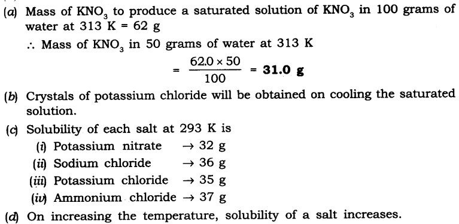
Question 4. Explain the following giving examples:
(a) Saturated solution
(b) Pure substance
(c) Colloid
(d) Suspension
Answer: (a) Saturated solution: In a given solvent when no more solute can dissolve further at a given temperature is called saturated solution.
(b) Pure substance: A pure substance consists of a single type of particles. E.g., gold, silver.
(c) Colloid: A colloid is a solution in which the size of solute particles are bigger than that of true solution. These particles cannot be seen with our naked eyes, they are stable, e.g., ink, blood.
(d) Suspension: It is a heterogeneous mixture in which the solute particles are big enough to settle down, e.g., chalk-water, paints, etc.
Question 5. Classify each of the following as a homogeneous or heterogeneous mixture: soda water, wood, air. soil, vinegar, filtered tea.
Answer: Homogeneous: Soda water, vinegar, filtered tea.
Heterogeneous: Wood, air, soil.
Question 6. How would, you confirm that a colourless liquid given to you is pure water?
Answer: By finding the boiling point of a given colourless liquid. If the liquid boils at 100°C at atmospheric pressure, then it is pure water. This is because pure substances have fixed melting and boiling point.
Question 7. Which of the following materials fall in the category of a “pure substance”?
(a) Ice (b) Milk (c) Iron
(d) Hydrochloric acid (e) Calcium oxide (f) Mercury
(g) Back (h) Wood (i) Air.
Answer: Pure substances are: Ice, iron, hydrochloric acid, calcium oxide and mercury.
Question 8. Identify the solutions among the following mixtures.
(a) Soil (b) Sea water
(c) Air (d) Coal
(e) Soda water.
Answer: Solutions are: Sea water soda water and air.
Question 9. Which of the following will show “Tyndall effect”?
(a) Salt solution (b) Milk
(c) Copper sulphate solution (d) Starch solution.
Answer: Milk and starch solution.
Question 10. Classify the following into elements, compounds and mixtures.
(a) Sodium (b) Soil (c) Sugar solution
(d) Silver (e) Calcium carbonate (f) Tin
(g) Silicon (h) Coal (i) Air
(j) Soap (k) Methane (l) Carbon dioxide
(m) Blood
Answer: Elements – Compounds – Mixtures
Sodium – Calcium carbonate – Sugar solution
Silver – Methane – Soil
Tin – Carbon dioxide – Coal
Silicon – Soap – Air ,Blood
Question 11. Which of the following are chemical changes?
(a) Growth of a plant (b) Rusting of iron
(c) Mixing of iron filings and sand (d) Cooking of food
(e) Digestion of food (f) Freezing of water
(g) Burning of a candle.
Answer: Chemical changes are:
(a) Growth of a plant (b) Rusting of iron
(c) Cooking of food (d) Digestion of food
(e) Burning of a candle
NCERT Solutions for Class 9 Science Chapter 2 Is Matter Around Us Pure (Hindi Medium)
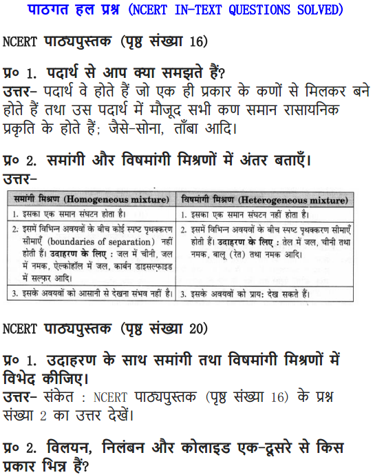
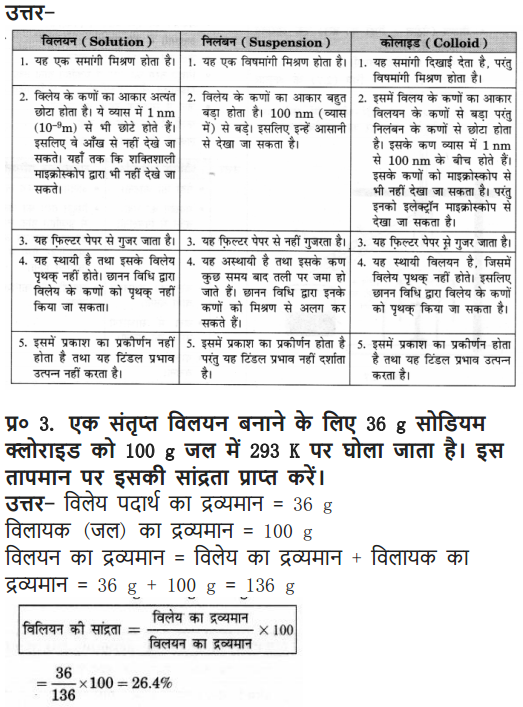
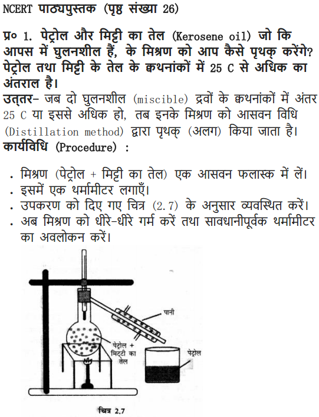
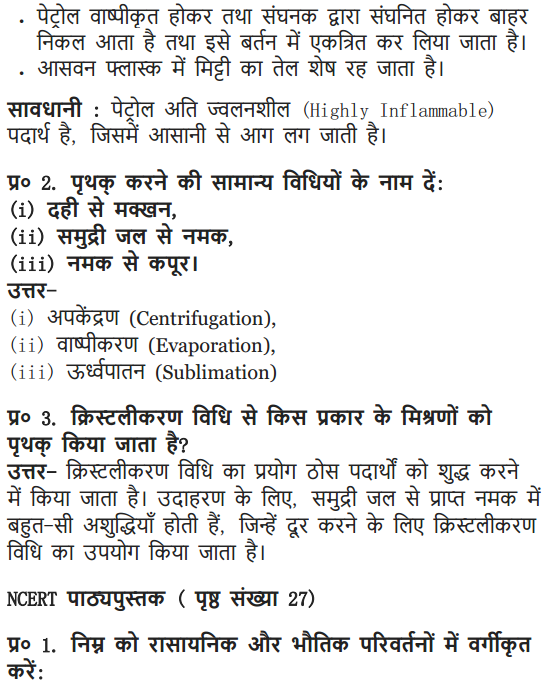
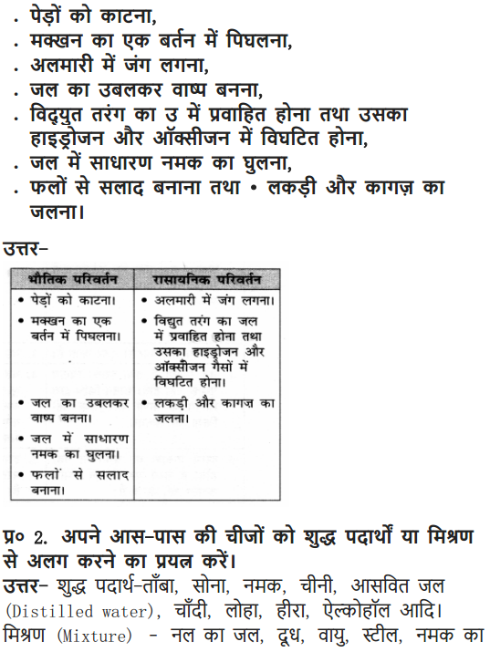
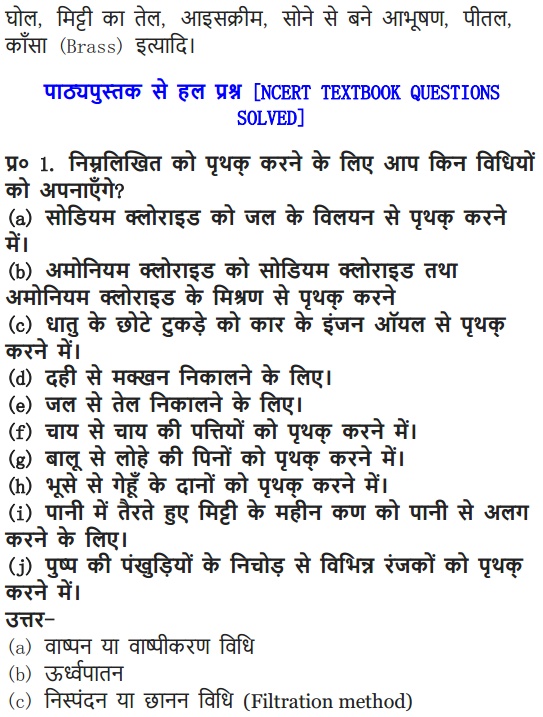
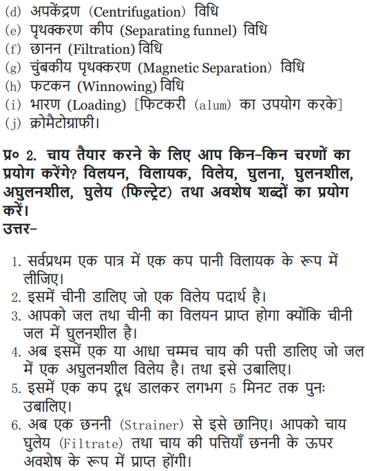
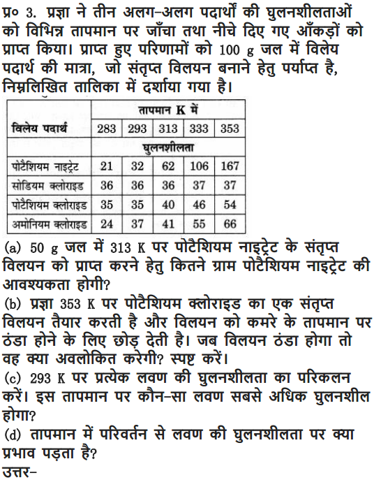
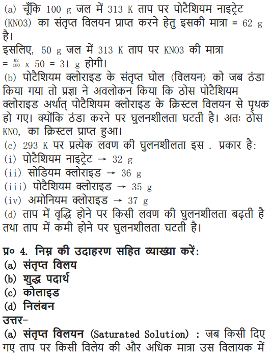
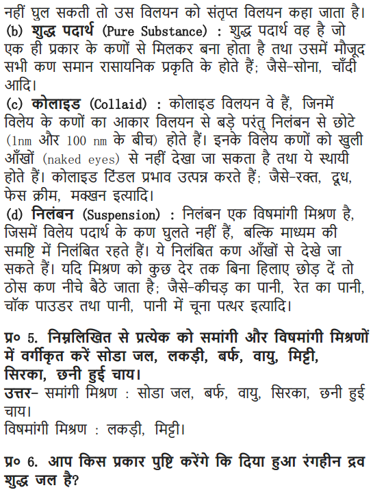
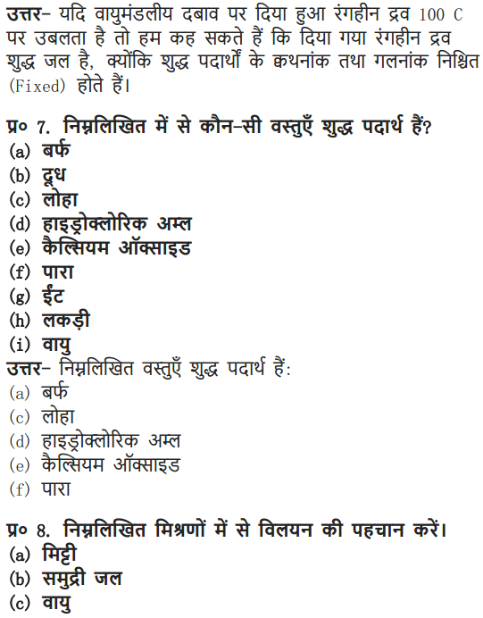
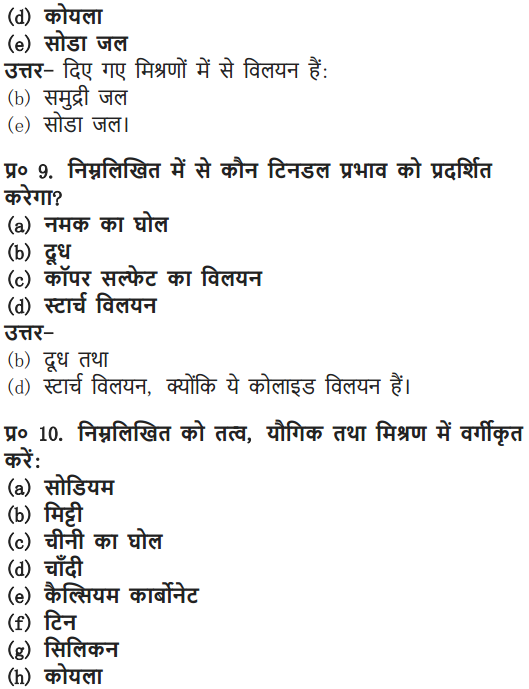
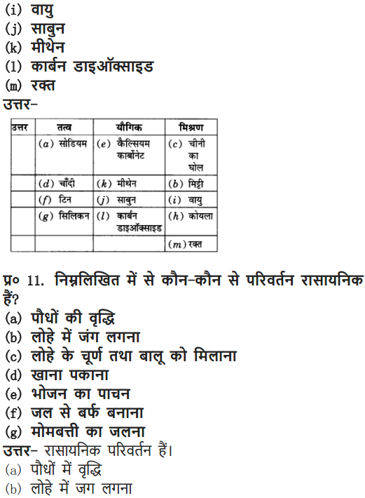
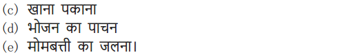
MORE QUESTIONS SOLVED
NCERT Solutions For Class 9 Science Chapter 2 Multiple Choice Questions
Choose the correct option:
1. Fog, clouds are an example of
(a) aerosol (b) colloid
(c) suspension (d) emulsion
2. Sponge can be compressed, it is a
(a) solid (b) liquid
(c) gas (d) foam
3. An impure sample of potash alum can be purified by
(a) evaporation (b) crystallisation
(c) centrifugation (d) filtration
4. Chalk dissolved in water is an example of
(a) true solution (b) colloid
(c) suspension (d) saturated solution
5. 50 gm sugar is dissolved in a glass of water at 30°C. On heating this solution it will
(a) crystallise (b) evaporate
(4 become unsaturated (d) sugar will char
6. Which of the following shows tyndall effects?
(a) salt solution (b) sugar solution
(c) starch solution (d) copper sulphate solution
7. Pick up the odd one out.
(a) brass ‘ (b) air
(c) sand (d) graphite
8. Which of the following is liquid-liquid solution?
(a) face-cream (b) emulsion
(c) milk (d) all of these
9. To separate two miscible liquids by fractional distillation, it should have one of the following condition
(a) should be miscible (b) should be immiscible
(c) difference in the boiling point should be less than 25 K
(d) none of these
10. To obtain toned and double toned milk from full-cream milk we can
(a) filtrate it (b) sediment it
(c) distillate it – (d) centrifuge it
11. The separation technique which involves the difference in their densities is
(a) sublimation (b) separation by separating funnel
(c) centrifugation (d) both (b) and (c)
Answer: 1—(a). 2—(a), 3—(b), 4—(c), 5—(c), 6—(c), 7—(d), 8—(d), 9—(c), 10—(d), 11-(d).
NCERT Solutions For Class 9 Science Chapter 2 Very Short Answer Questions
Question 1. Define solvent.
Answer: The component of the solution that dissolves the other component in it is called the solvent.
Question 2. Define solute.
Answer: The component of the solution that is dissolved in the solvent is called solute.
Question 3. What is ‘tincture of iodine’?
Answer: A solution of iodine in alcohol is known as tincture of iodine. It has iodine (solid) as the solute and alcohol (liquid) as the solvent.
Question 4. What are alloys?
Answer: The homogeneous mixture of two or more metals or a metal and non-metal is called an alloy. E.g., steel is an alloy of iron and carbon.
Question 5. Give one example of gas in liquid solution.
Answer: Cold-drinks, carbon dioxide gas as solute is mixed with water as a solvent.
Question 6. How can a solution be dilute or concentrated?
Answer: The amount of solute dissolving in a solvent decides whether the solution is dilute or concentrated.
Question 7. What is “concentration of a solution”?
Answer: The concentration of a solution is the amount of solute present in a given amount of solution or the amount of solute dissolved in a given mass or volume of solvent.
Question 8. State the difference between aqueous and, non-aqueous solution.
Answer: Aqueous solutions have water as solvent and non-aqueous solutions do not haVe water as solvent.
Question 9. What is “solubility” of a solute?
Answer: The amount of the solute present in the saturated solution at the given temperature is called its solubility.
Question 10. What is saturated solution?
Answer: The maximum amount of solute dissolved in a solvent at given temperature is called saturated solution, where no more solute can dissolve further.
Question 11. What is unsaturated solution?
Answer: If the amount of solute contained in a solution is less than the saturation level, it is called an unsaturated solution.
Question 12. How can you convert saturated solution into unsaturated or vice-versa?
Answer: Saturated solution on heating becomes unsaturated and unsaturated solution on cooling becomes saturated.
Question 13. Why water is called universal solvent?
Answer: Water can dissolve large number of substances in it.
Question 14. What is Tyndall effect?
Answer. The scattering of light by colloidal particles is known as Tyndall effect.
Question 15. How can we separate colloidal mixtures?
Answer: By centrifugation, in a centrifuge machine the colloidal solution is kept in a test tube, rotated very fast and due to centrifugal force the colloidal particles are separated.
Question 16. What is emulsion?
Answer: When both the dispersed phase and dispersing medium is liquid, it is called emulsion. E.g., milk, face cream.
Question 17. What is aerosol?
Answer. When the solid or liquid is dispersed in a gas it is called aerosol. E.g., smoke, fog.
Question 18. What is the principle for separation of immiscible liquids?
Answer: The principle of separating immiscible liquids into layers depending on their densities. The less denser liquid collects at the top and more denser liquid at the bottom. ‘
Question 19. What is chromatography?
Answer: Chromatography is the technique used for separation of those solutes that dissolve in the same solvent.
Question 20. What is distillation?
Answer: Distillation is the separation technique of two miscible liquids that boils without decomposition and have sufficient difference in their boiling points.
Question 21. How can you separate two liquids that have less than 25 K difference of boiling points?
Answer: To separate a mixture of two or more miscible liquids for which the difference in boiling points is less than 25 K, is fractional distillation.
Question 22. What is condenser?
Answer: It is an apparatus used to convert gas into liquid by cooling it.
Question 23. What is crystallisation?
Answer: When a saturated solution is heated and allowed to cool slowly, crystal of the solute dissolved in the saturated solution are separated from it. It is used to purify solids.
NCERT Solutions For Class 9 Science Chapter 2 Short Answer Questions
Question 1. Why is mixture called impure substance?
Answer: Mixture consists of different components which retain their properties and can be easily separated by physical processes, hence it is called as impure substance.
Question 2. Give the differences between mixture and compound.
Answer:

Question 3. Distinguish between a physical change and chemical change.
Answer:

Question 4. State the properties of a solution.
Answer: Properties of a solution are:
- A solution is a homogeneous mixture.
- Particles of a solution are smaller than 1 nm and cannot be seen by naked eyes.
- Do not scatter beam of light.
- Solute particles cannot be separated from the mixture by the process of filtration and thus, solution is stable.
Question 5. State the properties of a suspension.
Answer: Properties of a suspension
- Suspension is a heterogeneous mixture having particle size greater than 100 nm.
- The particles of a suspension can be seen by naked eyes.
- Particles can scatter a beam of light.
- It is unstable.
Question 6. What is a colloidal solution?
Answer: It is a heterogeneous solution which appears to be homogeneous, particles size is very small and so cannot be seen with naked eyes but it is stable. E.g., milk and blood.
Question 7. State the properties of colloidal solution.
Answer: Properties of colloidal solution.
- It is a heterogeneous mixture having particle size between 1 nm to 100 nm.
- Size of particles is very small, cannot be seen with naked eyes.
- It scatters a beam of light.
- They are stable as the particles do not settle when left undisturbed.
Question 8. Give the applications of centrifugation.
Answer: Application of centrifugation are:
- Used in diagnostic laboratories for blood and urine test.
- Used in dairies and home to separate butter from cream.
- Used in a washing machines to squeeze out water from wet clothes.
Question 9. Give the applications of chromatography.
Answer: Applications of chromatography are
- To separate colours in a dye.
- To separate pigments from natural colours.
- To separate drugs from blood.
Question 10. Why is crystallisation better than evaporation?
Answer: Crystallisation is a process that separates a pure solid in the form of its crystals from a solution. Crystallisation is better than evaporation because during Evaporation
- Some solids decompose or some, like sugar may get charred on heating to dryness.
- Some impurities may remain dissolved in the solution even after filtration which on evaporation contaminates the solid.
Question 11. How will you separate a mixture of oil and water?
Answer: To separate a mixture of oil and water, we need a separating funnel as both are immiscible liquids. Pour the mixture in separating funnel and let the funnel stand undisturbed for sometime. So that separate layer of oil and water are formed. Open the stopcock of the separating funnel and pour out the lower layer of water carefully.
Question 12. A student is given a mixture of naphthalene ball’s powder and common salt. He need to separate this mixture. How will he do this?
Answer: The properties of both naphthalene and common salt should be known, before we choose the separation technique.
Naphthalene is a sublimate which on heating changes to gaseous state directly. Hence to separate a volatile compound (sublimate) from a non-volatile compound (non-sublimate), the sublimation process is used.

In a China dish the mixture is kept, and is placed on a stand. An inverted funnel is kept over the mixture in China dish with plugged stem. The sublimate on heating gets collected on the funnel and common salt remains in the China dish.
Question 13. How can we obtain different gases from air?
Answer: Air is a homogeneous mixture and its components can be separated by fractional distillation.

Question 14. Draw a flow diagram to show the water purification system in water works.
Answer:

In filtration tank water passes through different layers of sand and gravel as shown in the above figure this is for adsorption of impurities.
The clear water reaches a chlorinated tank where water is mixed with bleaching powder/chlorine to kill bacteria and then supplied to houses.
Question 15. Why is air considered as a mixture and not compound?
Answer: Air is considered as a mixture because it exhibits following properties:
- Each component present in air retains its properties.
- Each component can be separated by simple physical processes.
- The components do not have any fixed proportion. All gases are present in different amount. Example, in greener area—more oxygen and water vapour is present; near industrial area—air consists of lot of impurities and smoke suspended in it.
Question 16. How can you prove that water is a compound?
Answer: Water is a compound because if we pass electricity through it then at two different electrodes, we get two different gases i.e., oxygen and hydrogen during electrolysis of water. The ratio of oxygen: hydrogen is 1 : 2 by number of molecules.
- The properties of oxygen and hydrogen gases sire entirely different from that of liquid water.
- The ratio of oxygen: hydrogen combination is always constant i.e., 1: 2 by volume.
- To separate the components of water, we need electrolytic cell, and it is not a simple process.
Question 17. How can we convert saturated solution into unsaturated by heating?
Answer: Saturated solution is said to be saturated at a given temperature when there is no more scope of solute particles to dissolve /dissociate into water. It is because the solute particle has taken all the inter molecular space present in the solvent.
On heating, the molecules of solvent gain kinetic energy, start vibrating and try to move away from each other thereby accommodating some more solute particle in this space and hence it becomes an unsaturated solution.
Question 18. What is the difference in fog and smoke?
Answer: Fog is a colloidal solution with liquid dispersed in gas.
Smoke is a colloidal solution with solid dispersed in gas.
Question 19. If 20g of salt is present is 220 g of solution, calculate the concentration of solution:
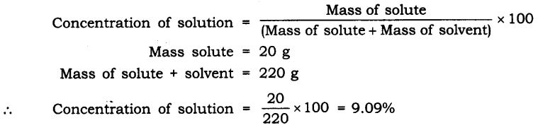
NCERT Solutions For Class 9 Science Chapter 2 Long Answer Type Questions
Question 1. Give the difference between true solution, colloidal solution and suspension.
Answer: The difference between true solution, colloidal solution and suspension

Question 2. State the different types of colloids with examples.
Answer: Different colloids are formed due to different dispersed phase and dispersing

Question 3. (a) Define solution.
(b) Give different types of solutions with one example each.
Answer: (a) Solution: It is a homogeneous mixture of two or more substances. It consists of solute and solvent.
(b) Different types of solution:
(i) Based on solvent—Aqueous and non-aqueous Aqueous solution has water as solvent (sugar + water) Non-aqueous solution has some other solvent but not water. Example, (sulphur + carbon disulphide)
(ii) Depending on the amount of solute dissolved in solvent—Dilute solution and concentrated solution
Dilute solution—Less amount of solute particles are present in a solvent.
Concentrated solution—Amount of solute present in its maximum capacity in a solvent.
(iii) Amount of solute present in its maximum capacity at a given temperature—Saturated and unsaturated solution.
Saturated solution—It is a solution in which no more solute can further dissolve in a given solvent at a given temperature.
Unsaturated solution—It is a solution in which some more solute can dissolve in a solvent at a given temperature.
(iv) Depending on the size of solute particles
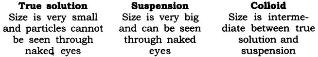
Question 4. How can you separate the following mixtures?
(a) Sand + iron (b)Cream from milk
(c) Salt + water (d) Ammonium chloride + NaCl
(e) Copper sulphate + water (f) Rice and dal (uncooked)
(g) Gases from air (h) Petrol and diesel from crude oil
(i) Drugs from blood (j) Acetone from water
Answer:
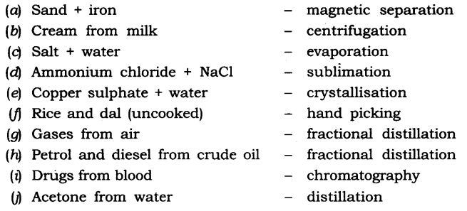
NCERT Solutions For Class 9 Science Chapter 2 Value-Based Questions
Question 1. Anil’s sister acddentally added some water into the bottle containing olive oil and she was afraid of the scolding. Anil helped his sister and separated the water from olive oil using bottle as separating funnel.
(a) What is the principle of using and working of separating funnel?
(b) Suggest two separation techniques used to separate liquid mixtures.
(c) What value of Anil is seen in the above case?
Answer: (a) The principle of separating funnel is difference in the densities of two liquids.
(b) Liquid mixtures can be separated by distillation and fractional distillation.
(c) Anil showed the value of helping, caring and responsible behaviour.
Question 2. Preeti saw a labour entering into the sewage manhole immediately after removing the lid. She promptly stopped the labour from entering into the manhole and told him to wait for some time before he enters into it.
(a) What will happen if the labour immediately enters into the manhole for cleaning) after removing the lid?
(b) Name main gases that are released from the manhole.
(c) What value of Preeti is seen in the above act?
Answer: (a) If the labour immediately enters the manhole on removing its lid he would die due to suffocation and inhalation of poisonous gases which are compressed and released by sewage.
(b) Gases released from the sewage manhole are methane, carbon dioxide and hydrogen sulphide.
(c) Preeti shows the value of moral responsible behaviour and aware citizen.
Question 3. Prasanna wanted to buy a deodorant from the shop. While buying a bottle he felt that it was slightly heavier than usual deodorant bottle that he purchased everytime. He read the weight mentioned on the bottle and told the shopkeeper to weigh the same. He found the bottle was heavy and on opening the deodorant bottle he found it half-filled with water. He complained the matter to the consumer authority.
(a) Define density.
(b) Apart from water what is the other substance that some shopkeepers add into the deodorant.
(c) What value of Prasanna is reflected in this act?
Answer: (a) Density of any substance is defined to be the mass of the substance per unit volume.
(b) One can add some cheap gases or compressed air in the deodorant bottles.
(c) Prasanna showed the value of being having leadership quality, rightful, aware and responsible citizen.
Question 4. Rita’s father always got his vehicle checked for pollution control. He got it tested for the aerosol if released by his car. He also uses unleaded petrol and makes use of public transport wherever possible. He sparingly use his car.
(a) What is aerosol?
(b) What happens when smoke released from vehicle mixes with fog?
(c) What are the values of Rita’s father is reflected here?
Answer: (a) When the solid or liquid is dispersed in a gas it is called aerosol e.g. smoke.
(b) When smoke mixes with fog it forms smog.
(c) Rita’s father is an aware citizen, environmentally concerned and dutiful.